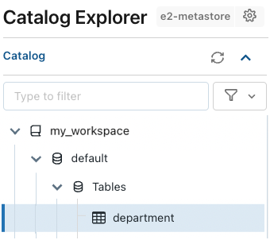
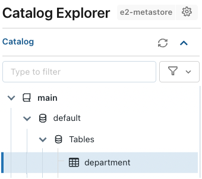

Tutorial: Create your first table and grant privileges in Unity Catalog
This article provides a quick walkthrough of creating a table and granting privileges in Unity Catalog. It is intended for users but may also be of interest to admins who are newly responsible for Unity Catalog management.
To get started immediately, you can go straight to the first section of this article. If you want to familiarize yourself with basic concepts first, see What is Unity Catalog?.
If you are an admin who is responsible for setting up Unity Catalog and managing it for your organization, see Set up and manage Unity Catalog.
Before you begin
In order to perform the tasks described in this article, you must have:
A Databricks workspace that is enabled for Unity Catalog. See Set up and manage Unity Catalog.
Access to compute that uses a Unity Catalog-compliant access mode. SQL warehouses are all Unity Catalog-compliant. To learn about Unity Catalog-compliant clusters, see Access modes.
Access to a catalog in Unity Catalog. See Confirm access to a catalog.
Appropriate privileges on Unity Catalog objects. These are listed at the beginning of each task.
Other users and groups added to the workspace. See Manage users, service principals, and groups.
Confirm access to a catalog
To run the tutorials in this article, you must have the USE CATALOG privilege on a catalog in Unity Catalog and both the USE SCHEMA and CREATE TABLE privileges on the default schema in that catalog. Catalogs are the top of the three-level namespace in Unity Catalog: catalog.schema.table.
To determine whether you have access to a catalog:
Log in to your workspace.
Click
 Catalog.
Catalog.Under Catalog in the left pane, view any catalogs that you have permission to list.
If you see a workspace catalog named after your workspace, go to Create your first table and manage permissions (for workspaces that include a workspace catalog). If you see a main catalog, go to Create your first table and manage permissions (for workspaces that include a main catalog).
To determine whether you have adequate permission on any other catalogs, click the catalog name in the left pane to open the details pane and open the Permissions tab to view your permissions. If you have
USE CATALOGon the catalog and bothUSE SCHEMAandCREATE TABLEon the catalog’s default schema, you can use the tutorial Create your first table and manage permissions (for workspaces that include a main catalog).
If you do not have USE CATALOG on at least one catalog, ask an account admin to assign it for you. Also ask for USE SCHEMA and CREATE TABLE on the catalog’s default schema.
Create your first table and manage permissions (for workspaces that include a workspace catalog)
Use this tutorial if your workspace was enabled for Unity Catalog automatically and includes a workspace catalog, named after the workspace. See Confirm access to a catalog.
Unity Catalog enables you to define access to tables declaratively using SQL or the Databricks Explorer UI.
In this example, you’ll run a notebook that creates a table named department in the workspace catalog and default schema (database). This catalog and schema are created automatically for all workspaces that were enabled for Unity Catalog automatically.
Permissions required: USE CATALOG privilege on the workspace catalog and both USE SCHEMA and CREATE TABLE on the <workspace-catalog>.default schema. All workspace users are granted these privileges when the workspace is created. No other permissions are required to complete this example apart from those that you grant as you run it.
Create a notebook and attach it to a Unity Catalog-compliant cluster or SQL warehouse. See Before you begin.
Select
SQLas your notebook language.Add the following commands to the notebook and run them (where
<workspace-catalog>is the name of your workspace catalog):USE CATALOG <workspace-catalog>
CREATE TABLE IF NOT EXISTS default.department ( deptcode INT, deptname STRING, location STRING );
INSERT INTO default.department VALUES (10, 'FINANCE', 'EDINBURGH'), (20, 'SOFTWARE', 'PADDINGTON');
Note
If your workspace catalog is set as the default catalog for your workspace, you don’t need to provide the complete three-level namespace (
<workspace-catalog>.default.department) or theUSE CATALOG <catalog>statement, because the workspace catalog is defined as the default catalog for the workspace and is therefore assumed. Any time you reference a catalog other than the default catalog, you must specify the catalog in the statement or declare it with aUSE CATALOG <catalog>statement.You now have a table in Unity Catalog.
Find the new table in Catalog Explorer.
In the sidebar, click
Catalog, then browse or search for the workspace catalog (<workspace-name>) and thedefaultschema, where you’ll find thedepartmenttable.Notice that you don’t need a running cluster or SQL warehouse to browse data in Catalog Explorer.
Grant permissions on the table.
As the original table creator, you’re the table owner, and you can grant other users permission to read or write to the table. You can even transfer ownership, but we won’t do that here.
On the table page in Catalog Explorer, go to the Permissions tab and click Grant.
On the Grant on dialog:
Select the users and groups you want to give permission to. In this example, we use a group called
data-consumers.Select the privileges you want to grant. For this example, assign the
SELECT(read) privilege and click Grant.
For more information about the Unity Catalog privileges and permissions model, see Manage privileges in Unity Catalog.
You can also grant those permissions using the following SQL statement in a Databricks notebook or the Databricks SQL query editor:
GRANT SELECT ON default.department TO `data-consumers`;
Create your first table and manage permissions (for workspaces that include a main catalog)
Use this tutorial if you have access to the main catalog. See Confirm access to a catalog.
Note
Alternatively, you can use this tutorial with any catalog for which you have the following permissions: USE CATALOG on the catalog and both USE SCHEMA and CREATE TABLE on the default schema. Substitute your catalog name for main in the examples that follow.
Unity Catalog enables you to define access to tables declaratively using SQL or the Databricks Explorer UI.
In this example, you’ll run a notebook that creates a table named department in the main catalog and default schema (database). This catalog and schema are created automatically for all metastores.
You can also try running an example notebook that performs the same tasks.
Permissions required
This tutorial requires the USE CATALOG privilege on the main catalog and both USE SCHEMA and CREATE TABLE on the main.default schema.
By default, all account users have USE CATALOG on main and USE SCHEMA on default. You might need to ask the catalog owner to grant you CREATE TABLE on the default schema. If you are a metastore admin or the catalog owner, you can grant yourself or any user or group the CREATE TABLE privilege using the following command in a notebook that supports Unity Catalog:
GRANT CREATE TABLE ON SCHEMA main.default TO `<user or group>`;
Tutorial instructions
Create a notebook and attach it to a cluster that supports Unity Catalog. See Before you begin.
Select
SQLas your notebook language.Add the following commands to the notebook and run them:
CREATE TABLE IF NOT EXISTS main.default.department ( deptcode INT, deptname STRING, location STRING );
INSERT INTO main.default.department VALUES (10, 'FINANCE', 'EDINBURGH'), (20, 'SOFTWARE', 'PADDINGTON');
You now have a table in Unity Catalog.
Find the new table in Catalog Explorer.
In the sidebar, click
Catalog, then use the browser (or search) to find the maincatalog and thedefaultschema, where you’ll find thedepartmenttable.Notice that you don’t need a running cluster or SQL warehouse to browse data in Catalog Explorer.
Grant permissions on the table.
As the original table creator, you’re the table owner, and you can grant other users permission to read or write to the table. You can even transfer ownership, but we won’t do that here.
On the table page in Catalog Explorer, go to the Permissions tab and click Grant.
On the Grant on dialog:
Select the users and groups you want to give permission to. In this example, we use a group called
data-consumers.Select the privileges you want to grant. For this example, assign the
SELECTprivilege and click Grant.
For more information about the Unity Catalog privileges and permissions model, see Manage privileges in Unity Catalog.
You can also grant those permissions using the following SQL statement in a Databricks notebook or the Databricks SQL query editor:
GRANT SELECT ON main.default.department TO `data-consumers`;
Run one of the example notebooks that follow for a more detailed walkthrough that includes catalog and schema creation, a summary of available privileges, a sample query, and more.